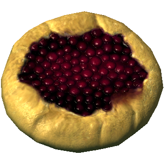

Snowberry Crostata
Return

Description
Restores 10 health points. Resists 4% of fire damage for 60 seconds.
Ingredients
- Butter
- 2 Snowberries
- Sack of Flour
Steps
- Prepare a crostata dough by mixing creamed butter to the flour in a bowl
- Add cold water until the entire mixture becomes... doughy
- Store outside (or anywhere cold) for an hour
- Flatten the dough with a rolling pin
- Poor snowberries in the center
- Bake until it becomes golden brown